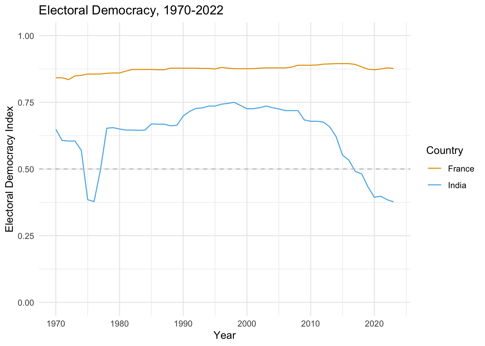
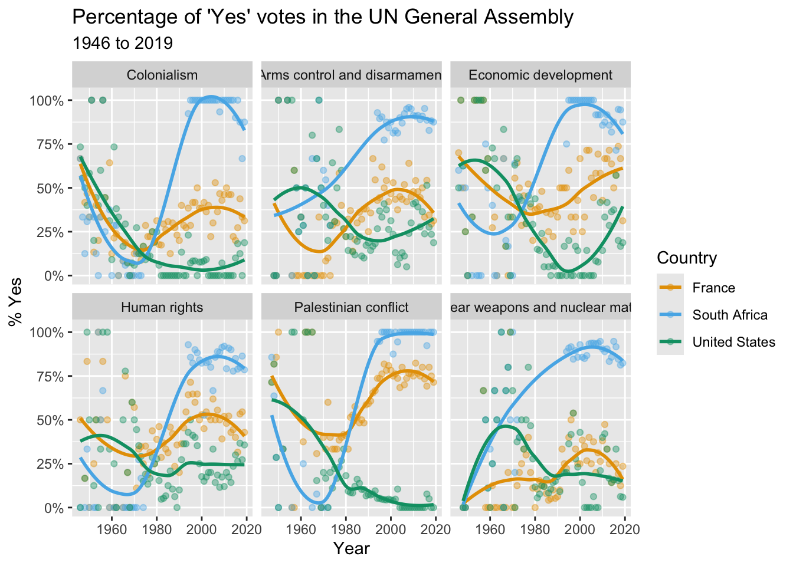

[1] 4R Coding Basics
January 16, 2025
R Programming Basics
What Can R Do?
- R is a powerful language for data analysis and visualization
- It is also a general-purpose programming language
- Does everything from web development to machine learning
- It is open-source and has a large community of users and developers
R as a Calculator
- R can be used as a simple calculator
- You can perform arithmetic operations on numbers
Some Common Arithmetic Operators
+addition-subtraction*multiplication/division^exponentiation (also**)
Functions
- A function is a set of instructions that produces some output
- In R, you can use built-in functions to perform specific tasks
- For example, you can use the
mean()function to calculate the average of a set of numbers - To do this you have to use the combine function
c()to create a vector of numbers
Create a vector of numbers and take the mean…
Some Common Base R Functions
mean()calculates the mean of a set of numbersmedian()calculates the median of a set of numberssd()calculates the standard deviation of a set of numberssum()calculates the sum of a set of numberslength()calculates the length of a vectormax()andmin()calculate the maximum and minimum values of a vectorround()rounds a number to a specified number of decimal placessqrt()calculates the square root of a numberlog()calculates the natural logarithm of a numberexp()calculates the exponential of a numberabs()calculates the absolute value of a number
Packages
From Functions to Packages
- A function is a set of instructions
read_csv()is a functionggplot()is a function
- A package is a collection of functions
readris a package that contains theread_csv()functionggplot2is a package that contains theggplot()function
- Use
install.packages()to install packages - Use
library()to load packages - You can install packages from CRAN
The Tidyverse
- The Tidyverse is a collection of data science packages
- It is also considered a dialect of R
- In this class, we will be using many Tidyverse packages
ggplot2for data visualizationreadrfor reading datadplyrfor data manipulationtidyrfor data tidying- Etc.
- At first we will load the packages independently, e.g.
library(ggplot2) - Later we will load them all at once with
library(tidyverse)
Objects
What is an Object?
- An object in R is a data structure used to store data
- It can vary from simple scalar types to more complex data structures like vectors, lists, or data frames
- Objects hold not only data but also information about the type of data and the operations that can be performed on them
- Every entity in R is considered an object, making R a language based around the manipulation of objects
How to Store Data
- In R, you can store data in objects using the assignment operator
<- - The object name is on the left of
<-, and the data or value you wish to assign to the object is on the right - Then you can print the object to the console using the object name
When to Store Data in Objects
- Note that you don’t always have to store data in objects
- You should mostly store data in objects when you want to use the data later
- If you only need to use the data once, you can just use the data directly
Your Turn!
- Go to the Week 2 module on Posit Cloud
- Work through the first set of challenges there
05:00
Three Examples
Let’s get going . . .
Let’s open up the Getting Started module on Posit Cloud…
And work through the examples there.
Example: Make a map!
Example: Make a map!
05:00
Example: Plotting Democracy Over Time
Example: Plotting Democracy Over Time
# Load the packages
library(vdemlite)
library(ggplot2)
# Use vdemlite to extract democracy scores for France and INdia
dem_data <- fetchdem(indicators = "v2x_polyarchy",
countries = c("FRA", "IND"))
# And now we can plot the data
ggplot(dem_data, aes(y = v2x_polyarchy, x = year, color=country_name)) +
geom_line() +
theme_minimal() +
xlab("Year") +
ylab("Electoral Democracy Index") +
ggtitle("Electoral Democracy, 1970-2022") +
geom_hline(yintercept = .5, linetype = "dashed", color = "grey") +
scale_color_manual(name="Country", values=c("#E69F00", "#56B4E9")) +
ylim(0, 1)05:00
Example: UN Voting Trends
Example: UN Voting Trends
library(tidyverse)
library(unvotes)
library(lubridate)
library(scales)
library(pacman)
unvotes <- un_votes %>%
inner_join(un_roll_calls, by = "rcid") %>%
inner_join(un_roll_call_issues, by = "rcid")
unvotes %>%
# then filter out to only include the countries we want
filter(country %in% c("South Africa", "United States", "France")) %>%
# then make sure R understands the the year variable is a data
mutate(year = year(date)) %>%
# Then group the data by country and year
group_by(country, year, issue) %>%
# then take the average Yes votes for each country_year
summarize(percent_yes = mean(vote == "yes")) %>%
# then make a nice plot
ggplot(mapping = aes(x = year, y = percent_yes, color = country)) +
geom_point(alpha = 0.4) +
geom_smooth(method = "loess", se = FALSE) +
facet_wrap(~issue) +
scale_y_continuous(labels = percent) +
scale_color_manual( values=c("#E69F00", "#56B4E9", "#009E73")) +
labs(
title = "Percentage of 'Yes' votes in the UN General Assembly",
subtitle = "1946 to 2019",
y = "% Yes",
x = "Year",
color = "Country"
)05:00